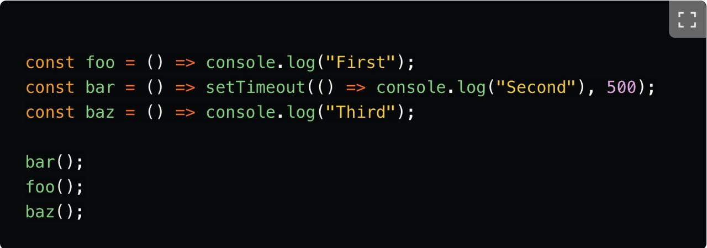
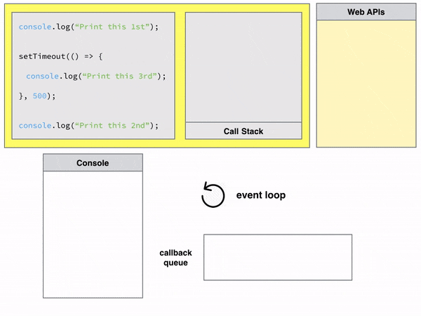

Lesson 14 : Event Loop setTimeout Promise then/catch/finally Async/Await thy/catch PromiseAll PromiseAllSettled EarlyReturnPattern CallBack function and Hell ConsoleTime Reduce Preview ---------------------- lecture ---------------------- 
